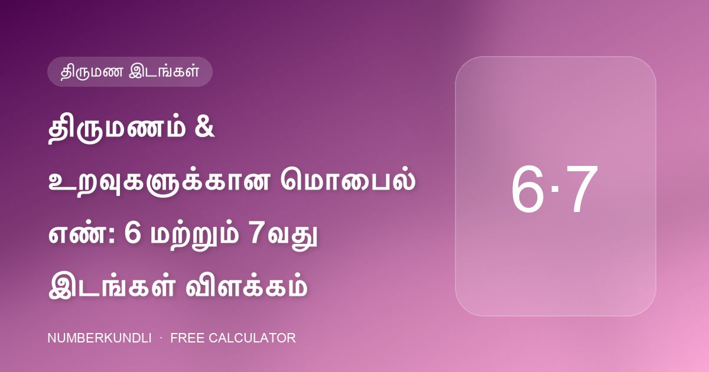
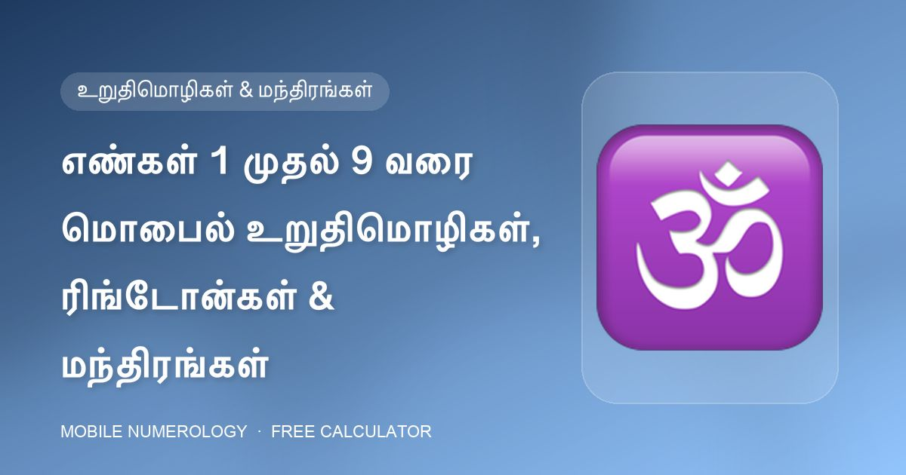
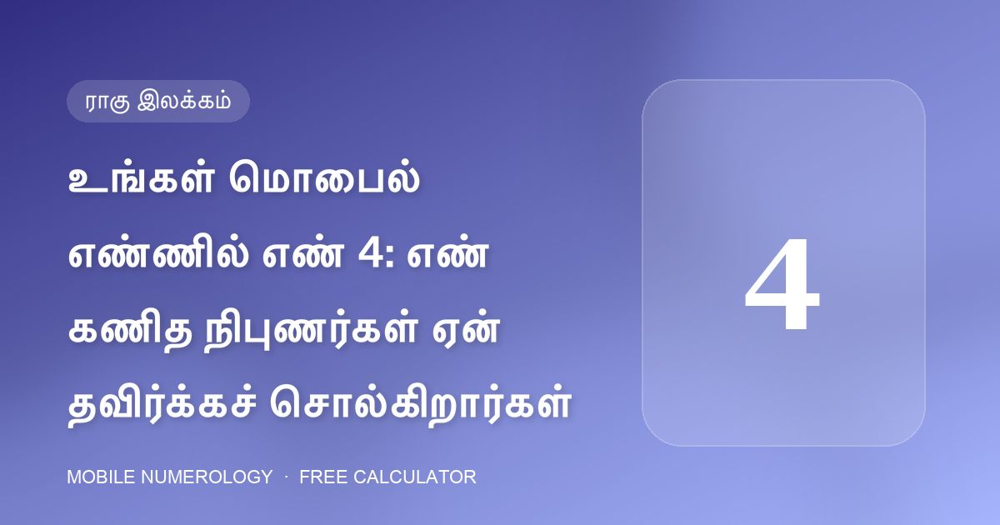

மொபைல் எண் · சிறப்பு
திருமணம் & உறவுகளுக்கான மொபைல் எண்: 6 மற்றும் 7வது இடங்கள் விளக்கம்
உங்கள் ஃபோன் எண்ணின் நடுவில் உள்ள இரண்டு இலக்கங்கள் உங்கள் காதல் வாழ்க்கையை விவரிக்கின்றன. அவற்றில் ஒன்று உதவும்; பல தீங்கு செய்யும்.
அட்வான்ஸ் மொபைல் நியூமராலஜி வகுப்பிலிருந்து எடுக்கப்பட்ட நடைமுறை வழிகாட்டிகள்: உங்கள் ஃபோன் எண்ணின் ஒவ்வொரு இலக்கத்தையும் எப்படிப் படிப்பது, அதிர்ஷ்ட பின் மற்றும் கடவுச்சொல்லைத் தேர்வு செய்வது, பிறந்த தேதிக்கு ஏற்ப வால்பேப்பர், கவர் மற்றும் நிறத்தை அமைப்பது.

உங்கள் ஃபோன் எண்ணின் நடுவில் உள்ள இரண்டு இலக்கங்கள் உங்கள் காதல் வாழ்க்கையை விவரிக்கின்றன. அவற்றில் ஒன்று உதவும்; பல தீங்கு செய்யும்.

வணிக லைனுக்கு கடைசி மூன்று இலக்கங்கள் பெரும்பாலான வேலையைச் செய்கின்றன. அங்கே சரியாக என்ன வைக்க வேண்டும் — என்ன வெளியே வைக்க வேண்டும் என்பது இதோ.

மொபைல் எண் கணிதத்தின் ஒவ்வொரு பரிந்துரையும் ஒரு கேள்விக்குத் திரும்புகிறது: இந்த எண் உங்களுக்கு நட்பா, பகையா அல்லது நடுநிலையா?

ஒவ்வொரு அழைப்பும் ஒரு சிறிய நிகழ்வு. வகுப்பு ஒவ்வொரு எண்ணையும் இரண்டு உறுதிமொழிகள், ஒரு ரிங்டோன் பாணி மற்றும் ஒரு கிரக மந்திரத்துடன் இணைத்து மனநிலையை அமைக்கிறது.

ஒழுக்கத்திற்கு கருப்பு, அதிகாரத்திற்கு தங்கம், வணிகத்திற்கு பச்சை, உள்ளுணர்வுக்கு ஊதா — உங்கள் ஃபோனின் நிறம் ஒரு கிரகத்தின் தினசரி அளவு.

உங்கள் ஃபோனைப் பாதுகாக்க நீங்கள் தேர்ந்தெடுக்கும் கேஸ், நீங்கள் உங்களை எப்படிப் பாதுகாக்கிறீர்கள் என்பதை அமைதியாக விவரிக்கிறது. எண் கணிதம் ஒன்பது கவர் வகைகளைப் பிறப்பு எண்களுடன் பொருத்துகிறது.

1 க்கு உதயசூரியன், 2 க்கு முழு நிலா, 6 க்கு லட்சுமி, 9 க்கு ஆஞ்சநேயர் — ஒவ்வொரு எண்ணுக்கும் அதன் கிரகத்துடன் ஒத்திசையும் படிமம் உண்டு.

GANESHJI கூட்டுத்தொகை 6. LAXMI கூட்டுத்தொகை 5. கால்டியன் எண் கணிதத்தில் கடவுச்சொல் என்பது உள்ளே ஒரு எண் கொண்ட சொல் — அந்த எண்ணை வேண்டுமென்றே தேர்வு செய்யலாம்.

நீங்கள் ஒரு நாளில் டஜன் கணக்கான முறை உங்கள் ஃபோன் பின்னைத் தட்டச்சு செய்கிறீர்கள். எண் கணிதம் அதை ஒரு சிறிய தினசரிச் சடங்காகக் கருதுகிறது — எனவே இலக்கங்களைக் கவனமாகத் தேர்வு செய்யுங்கள்.

ஒன்பது கட்டங்கள், ஒரு பிறந்த தேதி. நீங்கள் எந்த ஆற்றல்களுடன் பிறந்தீர்கள் — எவற்றைச் சேர்க்க வேண்டும் என்பதை லோ ஷூ கட்டம் ஒரே பார்வையில் காட்டுகிறது.

மொபைல் எண் கணிதத்தின் ஒவ்வொரு பரிந்துரையையும் இரண்டு எண்கள் இயக்குகின்றன. இரண்டும் உங்கள் பிறந்த தேதியிலிருந்து வருகின்றன, ஒரு நிமிடத்திற்குள் கணக்கிடலாம்.

வகுப்புப் பொருள் ஒரு இலக்கத்தைப் பற்றி அசாதாரணமாகத் தெளிவானது: "மொபைல் ஃபோனில் 4 எண்ணைத் தவிர்க்கவும்." காரணம் இதோ.

8 சனியின் எண்: கர்மா, கடின உழைப்பு மற்றும் தாமதம். ஃபோன் எண்ணின் தவறான இடத்தில் அது பணம் மற்றும் உறவுகளுக்குச் சுமையாகிறது.

உங்கள் ஃபோன் எண்ணின் கடைசி இலக்கங்களைத் தேர்வு செய்ய முடிந்தால், எண் கணிதத்தின் தெளிவான விருப்பம்: 55 அல்லது 555.

உங்கள் மொபைல் எண் வெறும் இலக்கங்களின் வரிசை அல்ல. மொபைல் எண் கணிதத்தில் ஒவ்வொரு இடமும் — முதல் இலக்கம் முதல் கடைசி வரை — வாழ்க்கையின் ஒரு குறிப்பிட்ட பகுதியை ஆளுகிறது.